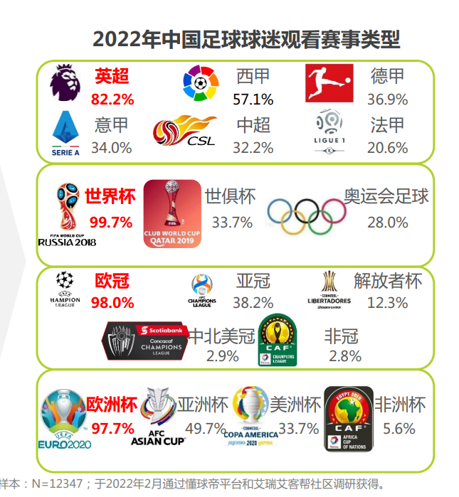

Soccer
User Research
Soccer jersey is a meaningful item for fans to support their favorite teams.
In 2022, 82.2% Chinese fans chose to watch English Premier League, and over half
Chinese fans also watch La Liga. The potential soccer jersey market of these two
league's fans is really large. This year is a World Cup-year, and almost every Chinese
fan will watch World Cup based on the research. Therefore, the information about
jerseys of these three matches can attract more users than other matches.
There is no report specifically showing the market size of Chinese soccer jersey. From the Manchester City's official store,
there are over 10 thousand
fans following the stores, which means many fans are interested in buying a jersey.

Due to my interviews, I found some people still do not learn about the detailed
information about soccer jersey, and they just buy it without considerations. When I saw
the posts in the "jersey circle" in Dongqiudi, Some online stores even sell many fake jerseys, and some people still cannot distinguish it well.
So I want to make a project for rudimental jerseys' collectors to find proper jerseys and stay away from the fake jerseys.